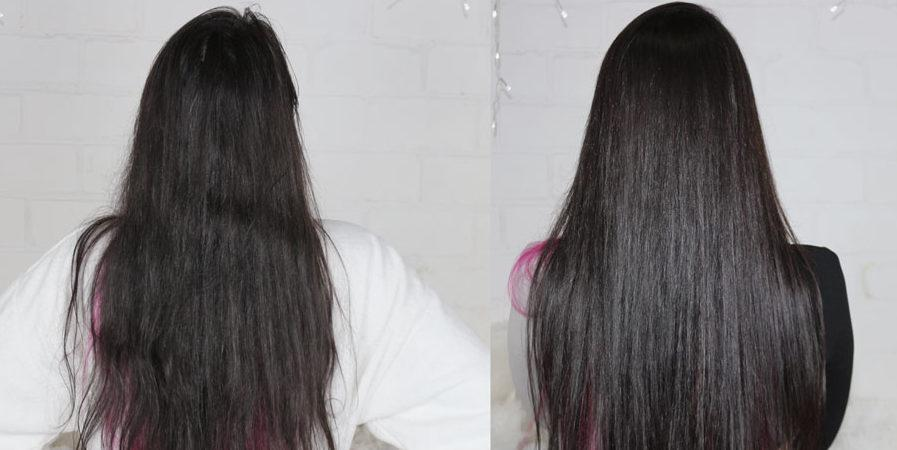

HOME |
NUTRIÇÃO |
HIDRATAÇÃO |
RECONSTRUÇÃO |
PRÉ POO
Como cuidar dos cabelos
Sobre o site!
Site destinados aos cuidados dos cabelos, dando dicas de hidratações, umectações, nutrição, reconstrução

Mapa do site.
- Home
- Hidratação
- Nutrição
- Reconstrução
- Umectação
- Pre poo
Cuidados basicos que cuidam dos cabelos!
- Cuide do seu cabelo na hora de lavar.
- Corte seu cabelo regularmente.
- Evite prender os cabelos molhados.
- Não passe condicionardor na raiz.
- Não passae shampoo no comprimento(somente raiz, leve a espuma ao restante)
- Seguir um cronograma de cuidados.
Sites recomendados sobre assunto.
- https://www.youtube.com/user/carolkyoko
- https://www.youtube.com/channel/UCCpL3IWLgL9uD48ai4m0roA
- https://www.youtube.com/channel/UCxQMQpTEMGMzUxWxt5OFhGA